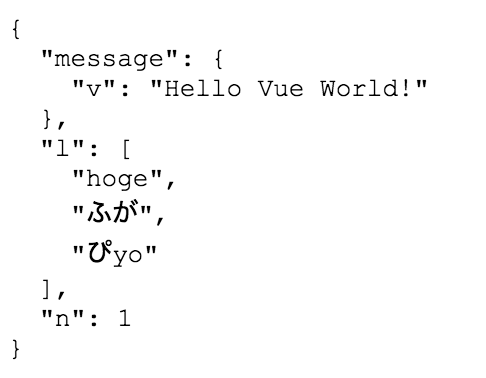

Vue.jsでデータの内容を開発ツールを使わないで確認する
小ネタです
Vue.jsは、ブラウザの開発ツールやVue.js用の拡張機能を利用しなくても、HTMLファイルにとあるタグを記述することで、データの内容をJSON形式で確認できます。
記述方法
HTMLファイル内に「{{ $data }}」を任意の場所に記述します。
<html>
<head>
</head>
<body>
<div id="app">
<p>{{ message.v }}</p>
<p>{{ message.v.length }}</p>
<p>{{ l[2] }}</p>
<p>{{ l[n] }}</p>
<pre>{{ $data }}</pre>
</div>
<script src="https://cdn.jsdelivr.net/npm/vue@2.5.13/dist/vue.js"></script>
<script src="main.js"></script>
</body>
</html>
仮にJavaScript側が下記の内容だった場合、
var app = new Vue({
el: '#app',
data: {
message: {
v: 'Hello Vue World!'
},
l: ['hoge', 'ふが', 'ぴyo'],
n: 1
}
})
表示内容は下記の通り。

CodePenでやってみました。
See the Pen vuejs_type by idontwannawork (@idontwannawork) on CodePen.
あんまり複雑なデータを出力すると、かえって見にくくなってしまうと思われますが、ちょっとした確認には十分に利用できるかな。